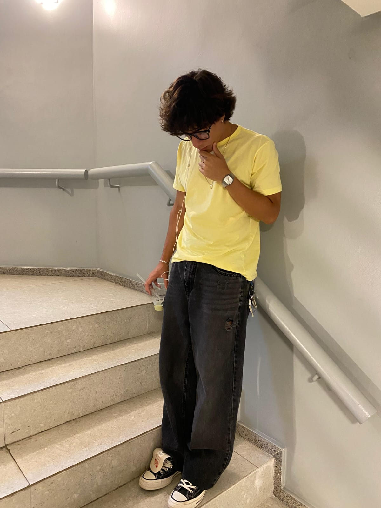
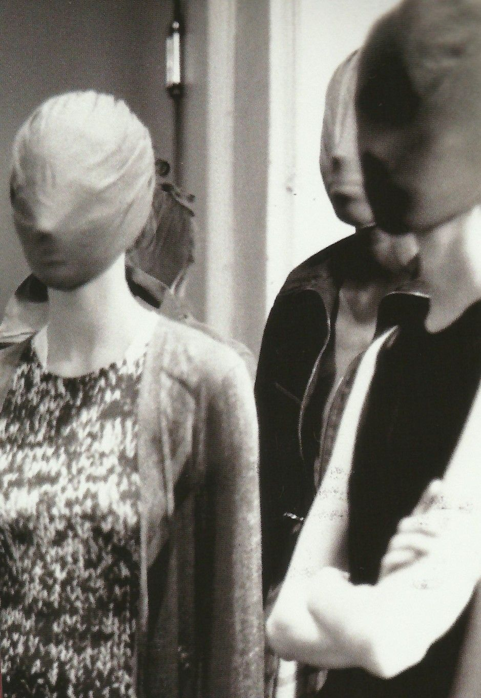
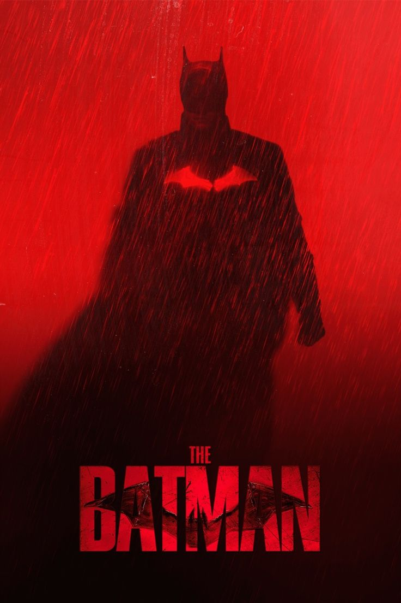
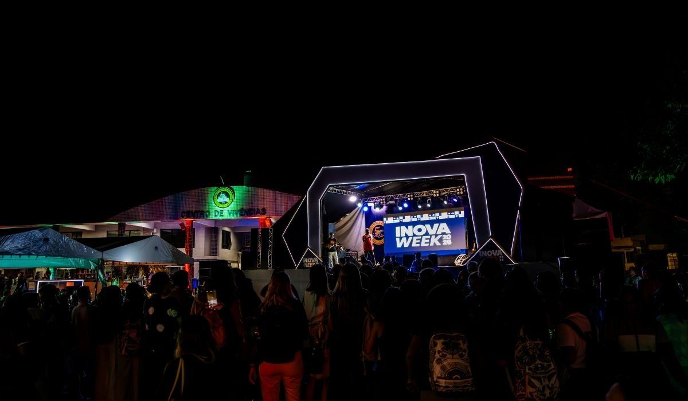

Desde minha infância eu sempre tive interesse e facilidade com tecnologia e com jogos, quando era mais novo meu sonho era ser youtuber, ja tive diversos canais mas nenhum deu realmente certo. Sempre gostei de futebol, meu time por influência do meu pai é o São Paulo, e joguei bola por muitos anos pela minha escola do fundamental.
Gosto bastante de moda e tenho como marca preferida a Maison Martin Margiela, uma marca franscesa fundada pelo belga Martin Margiela. Tambem gosto bastante de música sendo bem eclético ouço desde rock até bossa nova, curto forró, samba e principalmente trap, consumo bastante conteúdo de fora do país e tenho sonho de visitar a Noruega e Paris.
Consigo fazer LandingPages, em breve sites completos, conheço um pouco de musculação, faço bolos confeitados, inglês intermediario.
| Música | Time | Moda | Jogo | Filme |
|---|---|---|---|---|
 |
 |
|||
| Uma musica do artista Norte-americano "Nettspend". | Como eu falei, sou fanático pelo São Paulo Futebol Clube. | Como ja dito, gosto da Maison Margiela | Gosto de jogar videogames e o jogo que eu mais jogo é o Valorant | Gosto muito de filmes, mas em especial gosto de tudo que envolva o Batman. |
Fiz meu ensino fundamental em duas escolas diferentes, do 1° até o 7° no CESB e o 8° e 9° no , em Vila Velha. Já o Ensino Médio, cursei inteiro na escola Maura Abaurre. Pro futuro desejo trabalhar pra fora do país, ou em uma boa empresa na área, desejo ser dev fullstack ou focado em backend.
Últimas notícias do InovaWeek que irá acontecer em 2026 na uvv aqui: INOVAWEEK UVV
Nunca participei de nenhum evento, mas quero muito participar do InovaWeek, creio que será meu primeiro e estou muito
ansioso pra participar tanto vendo, quanto lançando projetos.

| Matérias UVV | ||||
|---|---|---|---|---|
| Construção de Software para Web | Design e Desenvolvimento de Banco de Dados I | Experiência e Interface com o Usuário | Lógica para Computação | Fundamentos de Tecnologia da Computação |
| Em Construção de Software para Web é o desenvolvimento de sites e sistemas que funcionam na internet, utilizando tecnologias de front-end (HTML, CSS e JavaScript) para a interface do usuário, back-end para a lógica do sistema e banco de dados para armazenar informações. O objetivo é criar aplicações web funcionais, interativas e acessíveis através do navegador. | Em Design e Desenvolvimentro de Banco de Dados I estudamos a modelagem, criação e manipulação de bancos de dados, incluindo modelo conceitual, lógico e físico, além de consultas utilizando SQL. | Em Experiência e Interface com o Usuário estudamos a criação de interfaces intuitivas e agradáveis, focando na usabilidade, acessibilidade e na melhor experiência para o usuário utilizando UX/UI. | Em Lógica para Computação estudamos raciocínio lógico aplicado à programação, incluindo algoritmos, proposições lógicas e resolução de problemas computacionais. | Em Fundamentos de Tecnologia da Computação estudamos a introdução aos conceitos básicos da computação, como hardware, software, sistemas operacionais, redes e funcionamento geral dos computadores. |